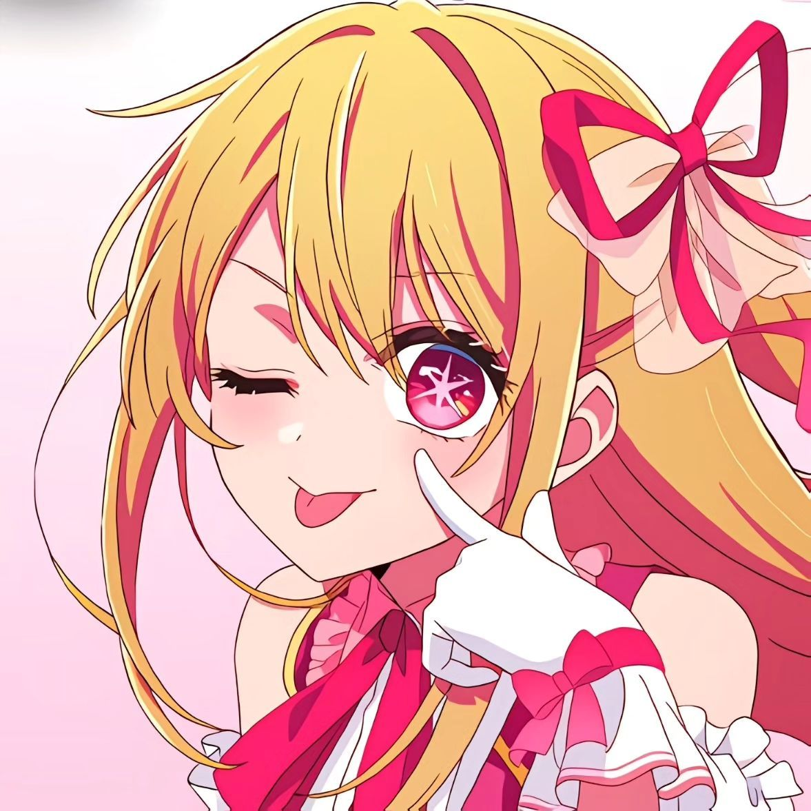
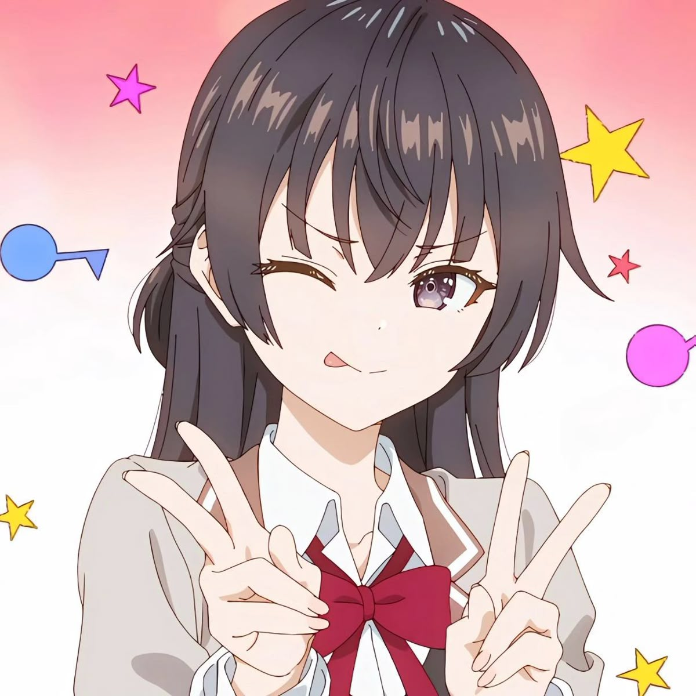
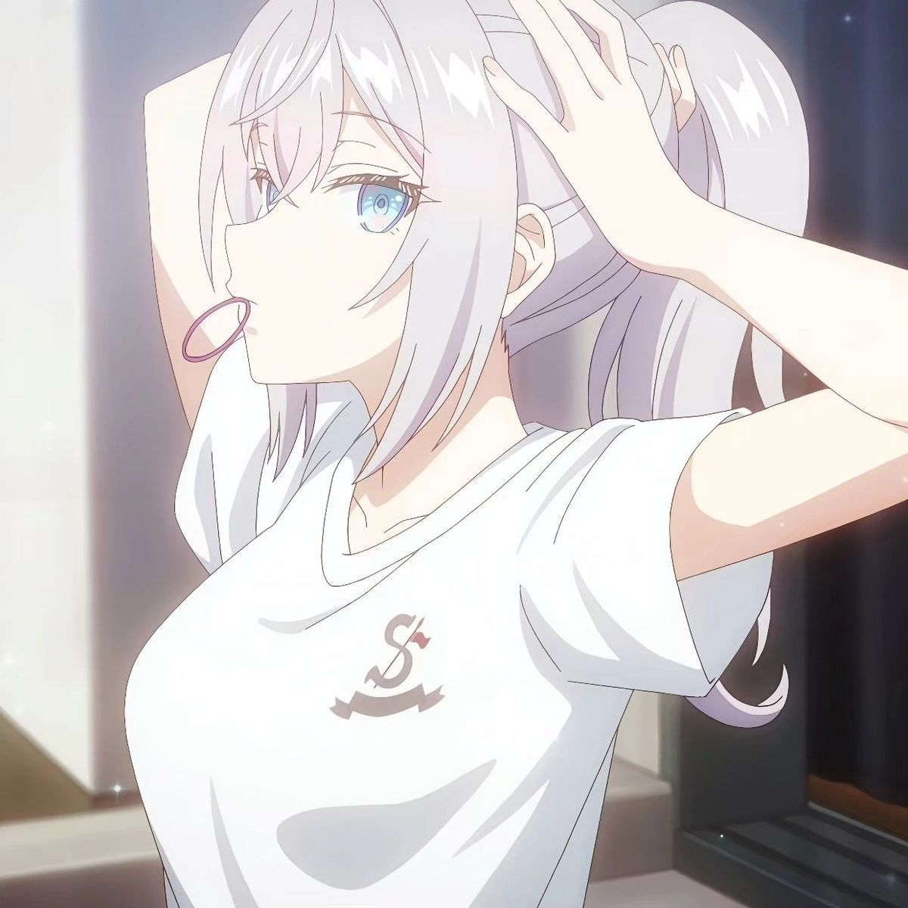

Hi! Namaku Raditya Nanda Dhevara, but you can call me Dheva, Depz, or Depa, whichever feels right to you 😄
Right now, I'm still on a journey of finding my true self. Kadang aku masih merasa belum maksimal dalam banyak hal — terutama dalam hal niat dan konsistensi untuk menjadi lebih baik. Aku juga masih sering merasa minder atau kurang percaya diri, but deep down, I keep trying to learn, grow, and change little by little.
Aku percaya setiap orang punya waktunya masing-masing, and maybe this is my time to start again, selow tapi pasti.
Semoga di tahun ini dan tahun-tahun berikutnya, semua dreams, hopes, and goals yang aku mau bisa benar-benar terwujud. 🌻
"You don't have to be perfect to be better — you just have to keep going."
"Grow at your own pace, even when it feels slow — progress is still progress."
"Someday, the version of me I'm chasing will finally smile back." 🌙
Between people
Between the wind
Each person has their own desires
Painted together
When it becomes firm enough to stand on
Then it becomes my world
My small heart
And the good things in it
Break and harden
Melt and fall away
And only then can I see my eternity
Love between people
Everyone gathers together
Hoping for eternity
If we bury our bodies and hearts
Then our world becomes perfect
With love
With love
My small heart
Like small waves inside
Break and push towards you
Melting and falling away
And only then can I see my eternity
At its core, this song is about love as a universal force, not just romantic love, but the kind of love that connects all human beings, that heals, and that helps us grow.
It tells the story of how people, like the wind, cross paths and influence each other. Through these encounters — sometimes painful, sometimes beautiful — we begin to understand what it truly means to love and to be loved.
The imagery of hearts breaking, hardening, melting, and falling away represents the transformative journey of love. Only through experiencing these cycles of vulnerability and strength can we truly see our own eternity — our lasting impact on others and the world.
Sejak awal pandemi Covid, aku cukup kaget dengan keadaan dunia saat itu. It felt like something straight out of a movie, everything changed so fast.
Aku sering nonton film bertema zombie apocalypse, dan selalu berharap hal seperti itu nggak akan pernah terjadi di dunia nyata. Walau Covid jelas bukan zombie, tapi kenyataan bahwa virus itu bisa membunuh banyak orang bikin aku ".....".
Karena rasa takut itu, aku mulai mencari hal lain yang bisa bikin aku lupa sejenak. And that's when I found something new, the world of Anime.
Anime pertama yang aku tonton adalah Highschool DxD (not recommended tho 😅). Tapi dari situ aku langsung terpukau. Animasi, warna, ekspresi, semuanya terasa alive. Aku cuma bisa mikir, "How can people create something this cool?"
Setelah aku cari tahu, ternyata semua itu digambar frame by frame oleh animator. Aku shock banget. Sejak saat itu, aku jadi benar-benar respect para animator. Sampai sekarang pun, setiap kali nonton anime dengan visual yang keren, aku selalu ter-amaze dan mikir, "They really did this by hand… amazing." 🎨
Aku bersyukur banget punya orang tua yang begitu peduli. Mereka selalu menempatkan anak di atas segalanya, bahkan di atas diri mereka sendiri.
Dari kecil, hidupku bisa dibilang "serba ada", tapi bukan berarti mudah. Ayahku dulu sering berpindah-pindah kerja, jadi kami sering ikut berpindah tempat juga. Aku pernah tinggal di pedalaman Kalimantan, lalu pindah ke Jakarta. That was a huge culture shock for me.
Aku jadi anak yang agak sulit beradaptasi. Kadang aku merasa asing di tempat baru. Tapi satu hal yang selalu sama, orang tuaku selalu ada. Ibu sering bantu aku belajar, bahkan sampai nanya-nanya tiap mata pelajaran biar aku siap sekolah.
Waktu aku diterima di Institut Teknologi Bandung, itu jadi momen paling bahagia buat keluarga kami. Mereka sangat bangga dan menunjukkan cinta mereka dengan banyak cara, hadiah, dukungan, dan doa tanpa henti. Tapi di sisi lain, aku juga mulai sadar...
Hidup sendirian sebagai anak rantau itu nggak semudah yang aku kira.
Ternyata selama ini hidupku "terasa mudah" karena ada mereka di belakangku. Now that I'm on my own, I realize, life isn't easy, but that's what makes us grow.
We need to struggle, learn, and fight to become the real version of ourselves.
"Sometimes you need to be alone, not to feel lonely, but to realize who you truly are." 🌙
Mengenal diriku melalui lima dimensi yang membentuk siapa aku sekarang.
Aku selalu punya semangat tinggi untuk belajar. I love learning something new and challenging myself to be better every day. Aku nggak mau menjadi orang yang tertinggal, aku percaya bahwa progress, no matter how small, still matters.
Selain itu, aku easygoing parah, gampang bergaul dan sering dianggap membawa suasana positif. Ketika berbicara, aku sering membuat suasana menjadi meriah, bukan karena ingin menonjol, tapi karena aku selalu berusaha membuat orang lain merasa nyaman.
For me, being number one is cool, but being remembered is better. 🌟
Motivasi terbesarku datang dari keinginan untuk berkembang dan memberi dampak baik bagi orang lain.
Aku punya passion dalam belajar, beradaptasi, dan berbagi hal baru, karena aku percaya setiap pengetahuan yang aku dapat bisa membantu seseorang di luar sana.
Nilai yang paling aku pegang adalah ketulusan, kerja keras, dan keberanian untuk mencoba.
That's my "why" — to grow, to help, and to make people feel inspired by my journey.
Aku cepat menangkap hal baru dan punya rasa ingin tahu yang besar. Dalam hal keterampilan, aku mulai mengasah kemampuan di bidang teknologi, komunikasi, dan kreativitas.
Aku juga punya kemampuan untuk beradaptasi dengan lingkungan baru dan memahami orang lain dengan empati.
I may not know everything yet, but I'm always ready to learn and improve.
Aku tipe orang yang optimistic, warm, and flexible.
Aku mudah bergaul, tapi juga bisa serius kalau sudah fokus pada tujuan.
Aku suka lingkungan yang terbuka, penuh ide, dan tidak kaku, karena di situ aku bisa berkembang maksimal.
I'm the kind of person who brings good vibes, but also values deep and meaningful conversations.
Hidupku penuh dengan perpindahan dan pembelajaran baru, dari kampung biasa, kota besar, hingga akhirnya merantau untuk kuliah. Semua pengalaman itu membentukku jadi seseorang yang lebih tangguh, adaptable, dan sadar diri.
Aku belajar bahwa hidup itu nggak selalu mudah, tapi setiap tantangan adalah kesempatan untuk tumbuh.
Each experience, whether success or failure, has taught me something valuable — and that's what makes me.
"I'm still on my way — learning, growing, and finding who I truly am. Not perfect, but always in progress." 🌙
| Aspect | Key Points |
|---|---|
| Signature Strengths | Semangat belajar tinggi, easygoing, membawa suasana positif |
| Heart | Berkembang & memberi dampak, ketulusan, kerja keras, berani mencoba |
| Aptitudes & Skills | Cepat belajar, teknologi, komunikasi, kreativitas, empati tinggi |
| Personality | Optimistic, warm, flexible, good vibes, meaningful conversations |
| Experiences | Perpindahan tempat, adaptasi, tangguh, belajar dari tantangan |
Identifikasi Diri:
Nama: Raditya Nanda Dhevara
NIM: 18224111
Kelas: K03
Semester: Ganjil 2025/2026
Tinjauan Umum:
Refleksi umum atas hasil pembelajaran dan perkembangan diri selama UTS 1–4.
| Kriteria | Deskripsi Penilaian | Skor |
|---|---|---|
| Orisinalitas | Narasi pribadi yang jujur dan otentik. | 5 |
| Keterlibatan | Cerita mengalir alami dan emosional. | 5 |
| Gaya Bertutur | Hangat dan mudah diikuti. | 4 |
| Insight | Menggambarkan kesadaran diri dengan baik. | 5 |
| Kriteria | Deskripsi Penilaian | Skor |
|---|---|---|
| Orisinalitas | Pemilihan lagu yang merepresentasikan diri. | 5 |
| Keterlibatan | Tulisan emosional dan peka. | 5 |
| Emosi | Seimbang antara kejujuran dan ekspresi. | 4 |
| Inspirasi | Menyentuh dan memotivasi pembaca. | 5 |
| Kriteria | Deskripsi Penilaian | Skor |
|---|---|---|
| Orisinalitas | Kisah reflektif dan penuh makna. | 5 |
| Keterlibatan | Runtut dan menarik perhatian. | 5 |
| Pengembangan Narasi | Struktur ide kuat dan konsisten. | 5 |
| Inspirasi | Mengajak pembaca untuk refleksi diri. | 5 |
| Kriteria | Deskripsi Penilaian | Skor |
|---|---|---|
| Orisinalitas | Refleksi diri mendalam dan personal. | 5 |
| Keterlibatan | Jelas dan menarik. | 4 |
| Struktur | Tiap aspek SHAPE dijelaskan logis. | 5 |
| Inspirasi | Memotivasi pembaca untuk mengenal diri. | 5 |
| UTS | Total Skor | Persentase | Kategori |
|---|---|---|---|
| UTS-1 | 19/20 | 95% | Sangat Baik |
| UTS-2 | 19/20 | 95% | Sangat Baik |
| UTS-3 | 20/20 | 100% | Sangat Baik |
| UTS-4 | 19/20 | 95% | Sangat Baik |
Kesimpulan:
Keempat tugas menunjukkan konsistensi refleksi dan perkembangan diri. Aku belajar bahwa komunikasi yang baik bukan sekadar berbicara, tapi juga memahami dan hadir sepenuh hati. Ke depan, aku ingin mengasah komunikasi asertif tanpa kehilangan empati.